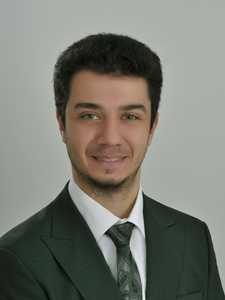

Ankara, Türkiye · Open to AI / ML roles
I build AI systems that have to work beyond the notebook.
AI/ML engineer with 3.5+ years of engineering experience, including three years at Turkish Aerospace Industries. I build Python/PyTorch models and the systems around them: retrieval, tool execution, evaluation, model integration and explainability. My recent public work focuses on measurable, inspectable agentic workflows.
- Python-first engineering
- Research + production mindset
- English-fluent collaboration

Software + AIEngineering / Research
AGENTICRetrieval + Tool Executionhybrid search · MCP · resumable sessions
ML SYSTEMSEvaluation + Integrationtracing · validation · model interfaces
SELECTED WORK
Engineering across models, agents, data and systems.
I like projects where the difficult part is not merely producing a model output, but making the surrounding workflow inspectable, testable, recoverable and measurable.
01Agentic AI · Hybrid Retrieval
RAG Document Intelligence
Built an evidence assistant that combines sparse retrieval, MiniLM embeddings and reciprocal-rank fusion. On 188 SciFact development queries over 5,183 abstracts, hybrid retrieval achieved 94.3% Recall@10. This measures retrieval, not answer accuracy.
MiniLMRRFFastAPIEvaluation
02Agent Infrastructure · Observability
Resumable MCP Agent Runtime
Added persistent MCP sessions, resumable tool execution and OpenTelemetry tracing to a local Qwen agent. Session reuse reduced the same 24-case batch from 314 to 119 seconds while preserving outputs. This separate branch does not use the dense retriever.
MCPOpenTelemetryQwenPython
03Tool Safety · SQLite
SQL Agent Tool Authorization
Replaced regex-only SQL checks with SQLite authorizer-based table controls. In a 64-case validation matrix, previously accepted unauthorized queries fell from 12 to zero, while valid-query overblocking was also corrected. The tested boundary is table access, not universal sandbox security.
SQLiteAuthorizationAgent Tools
04LLM Interpretability · M.Sc. Research
Struct-XAI
Built a toolkit for inspecting hidden states, attribution and activation behavior in Turkish language models. Recorded 31 model-prompt cases across five task categories; connected local inference to FastAPI, SQLite and retrievable artifacts. Final-state normalization checks now agree with native model logits.
PyTorchTransformersFastAPISQLite
05Agent Evaluation · Quality Gates
Agent Reliability Lab
Built evaluation tooling for recorded tool-using agent traces. Mandatory constraint violations now fail evaluation: three incorrect passes were corrected across four regression cases, with six controls preserved. The lab consolidates 96 historical records; these are not 96 new model runs.
Agent EvalsTrace AnalysisCI Gates
06Neural Networks · Numerical Correctness
NeuralTrainer
Built an educational NumPy MLP with a Tkinter interface. Corrected backpropagation against numerical gradients, increasing passing finite-difference cases from 80/120 to 120/120. This demonstrates derivative correctness rather than predictive accuracy.
NumPyBackpropagationTkinter
07Applied ML · Offline SageMaker Contracts
Industrial Fault Classification
Compared three models on 10,000 synthetic UCI AI4I observations, separating training, model selection, threshold calibration and final testing. Held-out average precision was 0.680 on 1,500 rows. This is same-record fault classification, not future-failure prediction. SageMaker Autopilot request contracts were validated offline, without an AWS training run.
scikit-learnboto3AutoML Contracts
08Applied ML · Retrospective Benchmark
Time-Series Pipeline Optimization
Optimized batched VanillaVAE inference: a matched-size synthetic CPU benchmark reduced median runtime from 5.85 to 0.165 seconds across 72,935 samples (35.5×). Repaired training/inference paths so all seven VAE variants passed smoke checks, up from five. Independent November 2026 validation, not a historical employer result.
PyTorchVAEBatchingRegression Tests
09Code Migration · Controlled Repair
Agentic Migrator
A deterministic-first migration platform using source-preserving structural transformations, isolated Git worktrees, bounded tests and optional LLM repair. Candidate changes are tested before learned rules are promoted through governed memory.
ASTGit WorktreesRegression Tests
10Synthetic Portfolio · Risk Evaluation
Banking Risk ML Platform
An end-to-end synthetic risk platform covering out-of-time validation, calibration, threshold selection, champion–challenger evaluation and drift monitoring. It explores human-review and deployment patterns; it is not a claim of a live banking deployment.
PythonSQLModel Evaluation
M.SC. RESEARCH · 2026
Struct-XAI
Compact, inspectable interpretability for instruction-tuned LLMs.
My thesis work investigates hidden states, attribution, layer-wise behavior and activation patching in Turkish language models. The recorded evaluation includes 31 model-prompt cases: 14 for each of two Qwen models and three for Gemma, across five task categories.
The research evaluation uses compact instruction-model tasks to expose model-specific blind spots, decision instability and scaling behavior while keeping methodological limits explicit.
XAILLMsActivation PatchingIntervention EvaluationReproducibility

EXPERIENCE
From model prototypes to engineering workflows.
Sep 2023 — Sep 2026
Software & Design Engineer — AI and Big Data
Turkish Aerospace Industries (TUSAŞ / TAI) · Ankara
- Developed AI and simulation software for autonomous behavior, data analysis and engineering decision support.
- Built explainability workflows combining model outputs, action traces, decision logic and attribution methods.
- Prototyped RAG and agentic workflows for requirement analysis, source tracing and knowledge retrieval.
- Built modular Python systems for simulation, visualization, ONNX integration, experiment tracking and technical documentation.
Nov 2022 — May 2023
Candidate Engineer
Turkish Aerospace Industries · Part-time
Developed YOLO/MediaPipe production-area video analytics for person tracking, work-zone occupancy, restricted-zone entry and phone-use detection.
EDUCATION
Engineering foundation, AI specialization.
Yıldız Technical University
M.Sc. in Computer Engineering · GPA 3.74 / 4.00
Thesis: Struct-XAI — Compact Interpretability Pipeline for Turkish LLMsAnkara University
B.Sc. in Electrical & Electronics Engineering (English) · GPA 3.71 / 4.00
Computer vision capstone: real-time sleep pose estimation with YOLOv8TOOLKIT
Built for applied AI work.
AI / ML
PyTorch, scikit-learn, XGBoost, LightGBM, deep learning, LLMs, RAG, agentic systems, XAI, anomaly detection, computer vision and model evaluation.
Data / Software / Cloud
Python, SQL, PySpark, Pandas, NumPy, C/C++, Git, Linux, Docker, APIs, testing, CI, PostgreSQL, Redis, Kubernetes, BigQuery and Vertex AI labs.
Decision Systems
Human-in-the-loop workflows, rule engines, migration systems, risk policies, model governance, Gymnasium, Stable-Baselines3, JSBSim, ONNX and multi-agent systems.
CONTACT
Building something difficult?
I’m interested in applied AI, ML systems, agentic products, code migration, explainability, evidence-grounded LLM systems, financial-risk/data platforms and research-heavy engineering roles.